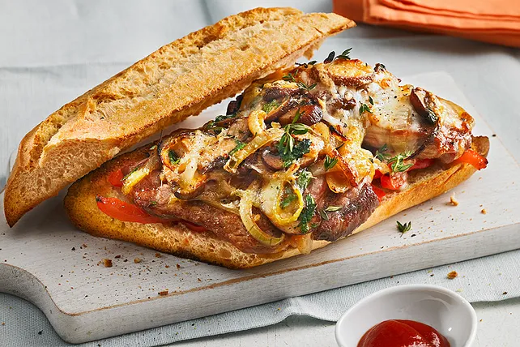

Philly Cheese Steak Sandwich
Zutaten
| 100 g | Champignons |
| 2 | Zwiebeln |
| 1 | grüner Paprika |
| 160 ml | lauwarmes Wasser |
| 2 TL | Knoblauch |
| 250 | Steak |
| 1 Kugel | Mozzarella |
| 2 | Baguettebrötchen |
| Öl zum Braten |
Zubereitung
- Zwiebeln, Champignons und grüne Paprikaschote in dünne Scheiben bzw. Streifen schneiden. Knoblauch in ganz feine Scheiben schneiden.
- Das Steak in sehr dünne Scheiben schneiden. Den Käse in dünne Scheiben schneiden, falls nicht bereits geschnitten.
- Eine große Pfanne bei mittlerer Hitze erhitzen und etwas Öl hineingeben. Die Zwiebeln in die Pfanne geben und unter gelegentlichem Rühren anbraten, bis sie weich und leicht gebräunt sind (ca. 5-7 Minuten). Die Champignons und die Paprikastreifen hinzufügen und weiter braten, bis das Gemüse weich ist und leicht gebräunt (weitere 5 Minuten). Den fein geschnittenen Knoblauch hinzufügen und kurz mitbraten, bis er duftet (ca. 1 Minute). Das Gemüse mit Salz und Pfeffer abschmecken und aus der Pfanne nehmen. Beiseite stellen.
- Etwas mehr Öl in die Pfanne geben, falls nötig, und die dünnen Steakstreifen bei hoher Hitze anbraten. Das Steak mit Salz und Pfeffer würzen und nur so lange braten, bis es durch ist und leichte Röststellen hat (ca. 2-3 Minuten).
- Das angebratene Gemüse zurück in die Pfanne zum Steak geben und alles gut vermischen. Die dünnen Käsescheiben gleichmäßig über das Steak und Gemüse legen und bei geringer Hitze schmelzen lassen.
- Während der Käse schmilzt, die Baguettebrötchen längs halbieren und, falls gewünscht, leicht toasten.
- Sobald der Käse geschmolzen ist, die Steak-Gemüse-Käse-Mischung gleichmäßig auf die unteren Hälften der Baguettebrötchen verteilen. Die oberen Hälften der Brötchen darauflegen, um die Sandwiches zu schließen.
- Die Sandwiches sofort servieren, solange sie noch warm sind.